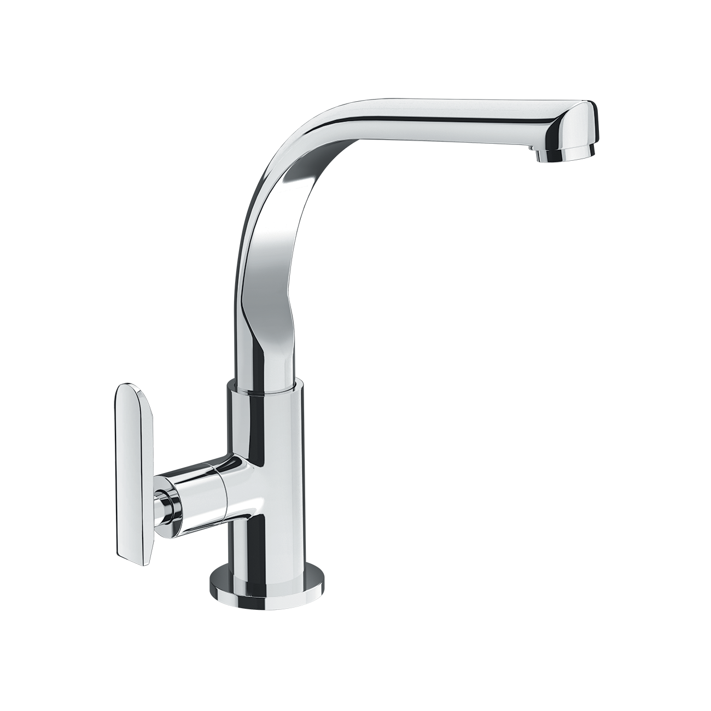
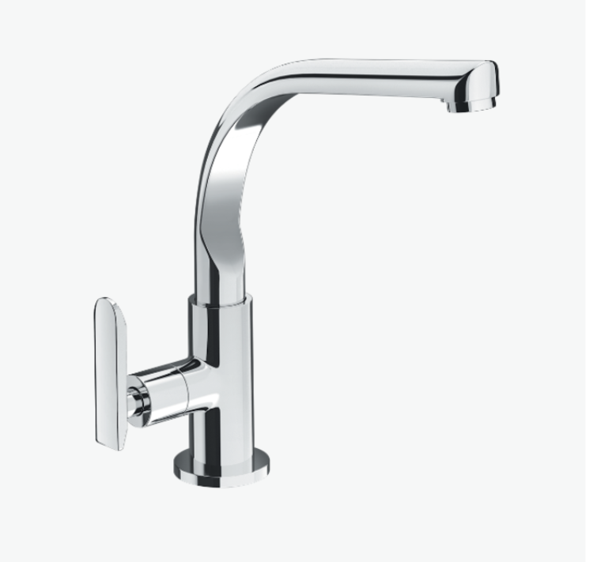
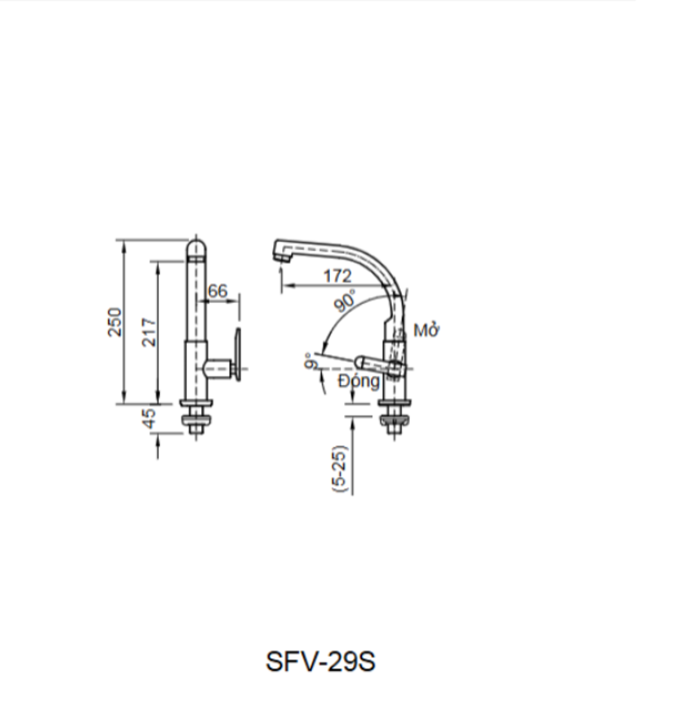

Trong không gian bếp hiện đại, mỗi chi tiết đều cần vừa hiệu quả vừa tiết kiệm. Và vòi bếp INAX SFV-29 chính là sự lựa chọn tinh tế, kết hợp thiết kế tiện dụng, vật liệu an toàn và độ bền bỉ vượt trội hơn 10 năm từ thương hiệu Nhật Bản. Đây không chỉ là một thiết bị vệ sinh, mà còn là giải pháp giúp căn bếp của bạn trở nên rộng rãi, tiện nghi và kinh tế hơn.Thiết kế tinh tế, phù hợp nhiều không gian bếpVòi rửa chén SFV-29 sở hữu thiết kế dạng chữ L hiện đại, mang đến sự hài hòa với hầu hết các kiểu chậu rửa bát và phong cách nội thất bếp. Kiểu dáng cao và cong nhẹ cho phép tạo ra nhiều khoảng trống hơn dưới vòi, giúp bạn dễ dàng rửa các vật dụng có kích thước lớn như nồi, chảo, khay nướng hay thậm chí cả bếp nồi hơi. Đây là một điểm cộng lớn với những gia đình thường xuyên nấu nướng hoặc có nhu cầu chế biến số lượng thực phẩm nhiều.Bên cạnh đó, vòi còn có khả năng xoay linh hoạt giữa hai bồn rửa chén, tối ưu hóa không gian và mang đến sự thuận tiện tối đa. Dù bạn cần tráng rau củ ở một bên hay rửa xoong nồi ở bên còn lại, chỉ với thao tác xoay nhẹ, SFV-29 sẽ giúp công việc trở nên nhanh chóng và dễ dàng hơn.Chất liệu cao cấp, an toàn cho sức khỏeMột trong những ưu điểm nổi bật của vòi bếp lạnh SFV-29 chính là chất liệu đồng thau mạ Crom-Niken sáng bóng, bền đẹp và đặc biệt an toàn. Lớp mạ không chỉ tăng cường khả năng chống ăn mòn, chống gỉ sét mà còn giữ được độ sáng mới lâu dài, hạn chế tình trạng xỉn màu theo thời gian.Đồng thau còn được biết đến là chất liệu không gây nhiễm khuẩn cho nguồn nước, đảm bảo nước sinh hoạt trong gia đình luôn tinh khiết và an toàn cho sức khỏe. Đây là yếu tố được nhiều gia đình quan tâm khi lựa chọn các thiết bị tiếp xúc trực tiếp với nguồn nước sử dụng hàng ngày vào các tính năng nóng lạnh không cần thiết.Ngoài ra, với thiết kế đơn giản, sản phẩm còn giúp bạn dễ dàng lắp đặt ngay tại nhà mà không cần đến thợ.Công nghệ tiên tiến – Trải nghiệm tiện lợi hơnVòi bếp SFV-29 được trang bị van điều khiển bằng sứ chất lượng cao, nổi bật với độ bền vượt trội, khả năng chống mài mòn và chống rò rỉ nước hiệu quả. Nhờ đó, sản phẩm duy trì tuổi thọ lâu dài, hạn chế hỏng hóc và giảm thiểu chi phí sửa chữa, thay thế.Tay gạt êm ái là một điểm cộng khác, giúp bạn dễ dàng điều chỉnh dòng chảy chỉ với thao tác nhẹ nhàng. Nguồn nước được cấp ra nhanh chóng, ổn định và không gây tiếng ồn khó chịu.Đặc biệt, vòi được thiết kế với đầu phun bọt chống bắn, tạo ra dòng nước mềm mại, hạn chế tình trạng văng tung tóe, giữ cho khu vực bếp luôn sạch sẽ và khô ráo. Điều này không chỉ mang lại sự tiện lợi khi rửa rau, hoa quả, chén đĩa mà còn tiết kiệm đáng kể lượng nước tiêu thụ.Tuổi thọ bền bỉ, chi phí hợp lýMột trong những lý do giúp vòi bếp INAX SFV-29 được nhiều gia đình ưa chuộng chính là độ bền vượt trội với tuổi thọ lên đến trên 10 năm. Đây là sự đảm bảo về chất lượng và cam kết lâu dài từ thương hiệu INAX, giúp bạn hoàn toàn yên tâm khi đầu tư.Ngoài ra, sản phẩm còn sở hữu lợi thế lớn về giá thành tiết kiệm. So với nhiều loại vòi bếp cao cấp khác trên thị trường, SFV-29 mang lại hiệu năng vượt trội trong khi chi phí vẫn nằm ở mức hợp lý, phù hợp với đa dạng đối tượng khách hàng.Lắp đặt dễ dàng, kích thước gọn gàngVới kích thước 200 x 306mm, vòi bếp INAX SFV-29 được thiết kế vừa vặn cho nhiều loại chậu rửa thông dụng, không chiếm quá nhiều diện tích nhưng vẫn đảm bảo sự tiện dụng tối đa. Quá trình lắp đặt cũng vô cùng đơn giản, nhanh chóng, bạn có thể tự thực hiện hoặc nhờ thợ kỹ thuật hỗ trợ trong thời gian ngắn.Bản vẽ Vòi bếp SFV-29Thông số kỹ thuậtTên sản phẩmVòi bếp SFV-29DạngVòi bếp lạnhChất liệu- Van điều khiển bằng sứ có độ bền cao, chống rò rỉ nước - Chất liệu đồng thau không gây nhiễm khuẩn cho nước - Mạ Crom-NikenKích thước200 x 306 (Cao x Rộng)Tính năng- Tay gạt êm ái, giúp nước nhanh chóng chảy ra và dễ dàng điều chỉnh nhiệt. - Tuổi thọ trên 10 năm. - Phun bọt chống bắn. - Giá thành tiết kiệmThương hiệuINAXThiết kế- Dạng dạng chữ L tạo ra nhiều không gian hơn, có thể rửa những thứ to như nồi, bếp. - Có thể xoay dễ dàng giữa 2 bồn rửa.Khác- Hotline tư vấn và bảo hành: 18006633
Vòi bếp SFV-29
Vòi bếp thương hiệu INAX.
Đã cập nhật danh sách yêu thích.
DANH MỤC: Vòi bếp
MÃ SẢN PHẨM: SFV-29
DEPTH: 0mm
HEIGHT: 200mm
WIDTH: 306mm
Trong không gian bếp hiện đại, mỗi chi tiết đều cần vừa hiệu quả vừa tiết kiệm. Và vòi bếp INAX SFV-29 chính là sự lựa chọn tinh tế, kết hợp thiết kế tiện dụng, vật liệu an toàn và độ bền bỉ vượt trội hơn 10 năm từ thương hiệu Nhật Bản. Đây không chỉ là một thiết bị vệ sinh, mà còn là giải pháp giúp căn bếp của bạn trở nên rộng rãi, tiện nghi và kinh tế hơn.Thiết kế tinh tế, phù hợp nhiều không gian bếpVòi rửa chén SFV-29 sở hữu thiết kế dạng chữ L hiện đại, mang đến sự hài hòa với hầu hết các kiểu chậu rửa bát và phong cách nội thất bếp. Kiểu dáng cao và cong nhẹ cho phép tạo ra nhiều khoảng trống hơn dưới vòi, giúp bạn dễ dàng rửa các vật dụng có kích thước lớn như nồi, chảo, khay nướng hay thậm chí cả bếp nồi hơi. Đây là một điểm cộng lớn với những gia đình thường xuyên nấu nướng hoặc có nhu cầu chế biến số lượng thực phẩm nhiều.Bên cạnh đó, vòi còn có khả năng xoay linh hoạt giữa hai bồn rửa chén, tối ưu hóa không gian và mang đến sự thuận tiện tối đa. Dù bạn cần tráng rau củ ở một bên hay rửa xoong nồi ở bên còn lại, chỉ với thao tác xoay nhẹ, SFV-29 sẽ giúp công việc trở nên nhanh chóng và dễ dàng hơn.Chất liệu cao cấp, an toàn cho sức khỏeMột trong những ưu điểm nổi bật của vòi bếp lạnh SFV-29 chính là chất liệu đồng thau mạ Crom-Niken sáng bóng, bền đẹp và đặc biệt an toàn. Lớp mạ không chỉ tăng cường khả năng chống ăn mòn, chống gỉ sét mà còn giữ được độ sáng mới lâu dài, hạn chế tình trạng xỉn màu theo thời gian.Đồng thau còn được biết đến là chất liệu không gây nhiễm khuẩn cho nguồn nước, đảm bảo nước sinh hoạt trong gia đình luôn tinh khiết và an toàn cho sức khỏe. Đây là yếu tố được nhiều gia đình quan tâm khi lựa chọn các thiết bị tiếp xúc trực tiếp với nguồn nước sử dụng hàng ngày vào các tính năng nóng lạnh không cần thiết.Ngoài ra, với thiết kế đơn giản, sản phẩm còn giúp bạn dễ dàng lắp đặt ngay tại nhà mà không cần đến thợ.Công nghệ tiên tiến – Trải nghiệm tiện lợi hơnVòi bếp SFV-29 được trang bị van điều khiển bằng sứ chất lượng cao, nổi bật với độ bền vượt trội, khả năng chống mài mòn và chống rò rỉ nước hiệu quả. Nhờ đó, sản phẩm duy trì tuổi thọ lâu dài, hạn chế hỏng hóc và giảm thiểu chi phí sửa chữa, thay thế.Tay gạt êm ái là một điểm cộng khác, giúp bạn dễ dàng điều chỉnh dòng chảy chỉ với thao tác nhẹ nhàng. Nguồn nước được cấp ra nhanh chóng, ổn định và không gây tiếng ồn khó chịu.Đặc biệt, vòi được thiết kế với đầu phun bọt chống bắn, tạo ra dòng nước mềm mại, hạn chế tình trạng văng tung tóe, giữ cho khu vực bếp luôn sạch sẽ và khô ráo. Điều này không chỉ mang lại sự tiện lợi khi rửa rau, hoa quả, chén đĩa mà còn tiết kiệm đáng kể lượng nước tiêu thụ.Tuổi thọ bền bỉ, chi phí hợp lýMột trong những lý do giúp vòi bếp INAX SFV-29 được nhiều gia đình ưa chuộng chính là độ bền vượt trội với tuổi thọ lên đến trên 10 năm. Đây là sự đảm bảo về chất lượng và cam kết lâu dài từ thương hiệu INAX, giúp bạn hoàn toàn yên tâm khi đầu tư.Ngoài ra, sản phẩm còn sở hữu lợi thế lớn về giá thành tiết kiệm. So với nhiều loại vòi bếp cao cấp khác trên thị trường, SFV-29 mang lại hiệu năng vượt trội trong khi chi phí vẫn nằm ở mức hợp lý, phù hợp với đa dạng đối tượng khách hàng.Lắp đặt dễ dàng, kích thước gọn gàngVới kích thước 200 x 306mm, vòi bếp INAX SFV-29 được thiết kế vừa vặn cho nhiều loại chậu rửa thông dụng, không chiếm quá nhiều diện tích nhưng vẫn đảm bảo sự tiện dụng tối đa. Quá trình lắp đặt cũng vô cùng đơn giản, nhanh chóng, bạn có thể tự thực hiện hoặc nhờ thợ kỹ thuật hỗ trợ trong thời gian ngắn.Bản vẽ Vòi bếp SFV-29Thông số kỹ thuậtTên sản phẩmVòi bếp SFV-29DạngVòi bếp lạnhChất liệu- Van điều khiển bằng sứ có độ bền cao, chống rò rỉ nước - Chất liệu đồng thau không gây nhiễm khuẩn cho nước - Mạ Crom-NikenKích thước200 x 306 (Cao x Rộng)Tính năng- Tay gạt êm ái, giúp nước nhanh chóng chảy ra và dễ dàng điều chỉnh nhiệt. - Tuổi thọ trên 10 năm. - Phun bọt chống bắn. - Giá thành tiết kiệmThương hiệuINAXThiết kế- Dạng dạng chữ L tạo ra nhiều không gian hơn, có thể rửa những thứ to như nồi, bếp. - Có thể xoay dễ dàng giữa 2 bồn rửa.Khác- Hotline tư vấn và bảo hành: 18006633
DANH MỤC: Vòi bếp
MÃ SẢN PHẨM: SFV-29
DEPTH: 0mm
HEIGHT: 200mm
WIDTH: 306mm